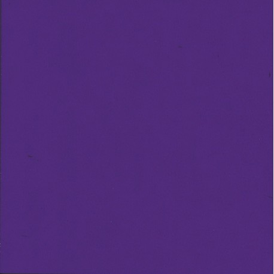

Icons of this color locate Hospitals and Student Health Centers that provide healthcare and Emergency services.
Icons of this color locate Hospitals and Student Health Centers that provide healthcare and Emergency services.
The icons of this color locate Job career centers that help students choose their career paths. Another benefit of visiting these career sites is that they help students find jobs that can accomadate to full time students.
Icons of this color locate Hospitals and Student Health Centers that provide healthcare and Emergency services.
 The icons of this color locate Student Housing Programs and campuses that provide afffordable apartments or financial aid to help student pay rent in the Bay Area.
Icons of this color locate the Top Five colleges for Computer Science mentioned on the Women in CS page.
Icons of this color locate the Most Diverse colleges mentioned on the Colleges page.